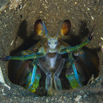

Stomatopoda
Stomatopoda (Odontodactylus scyllarus), chamados popularmente de tamarutacas ou de lacraias-do-mar no Brasil, é uma ordem de crustáceos marinhos da subclasse Hoplocarida, que agrupa cerca de 400 espécies, caracterizadas principalmente pela morfologia da segunda pata torácica, que é modificada em apêndice subquelado, lembrando uma pata de louva-a-deus.
Dê uma olhadinha no belíssimo animal acima.
Ele tem uma aparência incrível, não é mesmo?
Com tantas cores e cheio de estruturas interessantes.
O “mantis shrimp”, conhecido por vários nomes, como
lagosta-boxeadora, tamarutaca e esquila, realmente é
fantástico. Tanto que o pessoal do site The Oatmeal
criou um infográfico superinformativo especialmente
para esse crustáceo.
Para começar, as lagostas-boxeadoras
contam com olhos incríveis, que possuem três pontos
focais cada e são capazes de enxergar do espectro
ultravioleta ao infravermelho. Para que você tenha
uma ideia, o olho humano contém milhões de células
fotorreceptoras, entre elas os cones, que são as que
nos permitem ver as cores.
Pesadelo dos mares

As lagostas-boxeadoras costumam ser encontradas
próximo à costa de mares tropicais e subtropicais
e são predadoras letais que se alimentam de caranguejos,
camarões, moluscos e peixes. Na verdade, apesar de não
serem muito grandes — entre 15 e 30 centímetros —, as
tamarutacas são um verdadeiro pesadelo dos oceanos,
sendo consideradas como um dos animais mais violentos do planeta.
Elas possuem duas patas superpoderosas na parte dianteira que,
quando acionadas, são capazes de proferir um golpe com a mesma
aceleração de um disparo de uma arma do calibre 22 e força de
impacto de 60 kg/cm3! E isso em menos de 1/3.000 de segundo,
o que significa que, se um humano pudesse acelerar os braços
com 1/10 desse poder, seria possível lançar uma bola de
baseball em órbita ao redor da Terra.
Golpe Ninja
Essas patinhas se movem tão depressa que a água próxima a elas chega a ferver — em um fenômeno chamado supercavitação —, além de provocar uma onda de choque capaz de matar a presa mesmo que a lagosta maldita erre o golpe. Assim, com esse movimento ninja, as tamarutacas assassinam outros animais, despedaçando os coitados, mesmo que contem com carapaças protetoras. Veja um ataque a um pobre caranguejo no vídeo a seguir:
Aliás, tipicamente os aquários não mantêm espécimes de mantis entre os seus animais, já que graças aos seus hábitos violentos e sanguinários, eles não curtem dividir o espaço com outros bichinhos, massacrando seus vizinhos. Além disso, devido ao seu golpezinho ninja de nada, a lagosta-boxeadora é capaz de destruir os vidros dos tanques.

Mais curiosidades sobre O Pesadelo dos Mares
- Seus membros são tão poderosos que os cientistas estão estudando a estrutura de suas células para desenvolver novas armaduras para as tropas de combate;
- Existem estudos baseados na visão superpoderosa das tamarutacas para melhorar os componentes ópticos — como os dos leitores de CD e DVD, por exemplo — utilizados atualmente.
- A Força Aérea norte-americana “encomendou” uma pesquisa para o desenvolvimento de aeronaves militares mais resistentes com base no revestimento das patas golpeadoras do mantis;